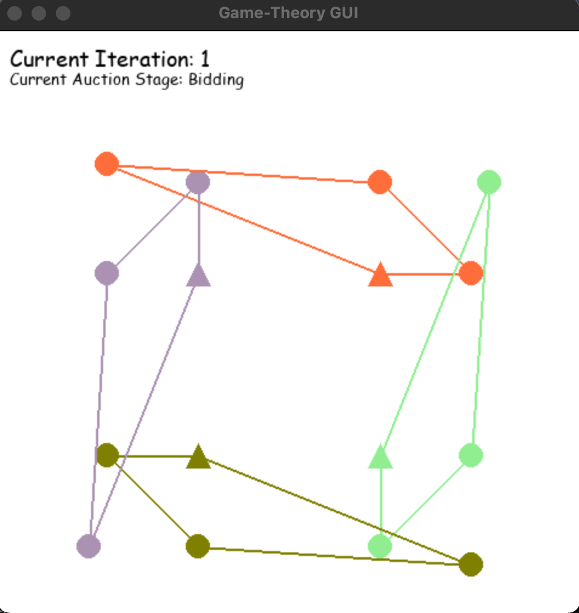

Introduction to the Core Components¶
This section will briefly go through the core components that helped build the web interface, its purpose and how it contributes to the full ecosystem.
Chronos¶
Chronos will act as the back-end of the web interface, whereby the exchange of infomation between Chronos and the web interface are made possible by Queue() objects. Chronos is
allowed to run in the background of the web interface because the web interface (which acts as the main process) initialises Chronos has a subprocess which runs continously in a while loop until a stop command is initiated from the web. Unlike primitive data-types such as dicts and lists, Queue() objects can be shared between a parent and child process rather smoothly, which proved to be useful for this application. For the core branch of Chronos with web integration, 3 Queue() objects are being shared between Chronos and the web interface:
consoleQueue: for rendering Chronos console outputs on the web interface’s console screencommandQueue: for sending commands from the web interface to ChronosdataOutputQueue: for sending data outputs from Chronos to the web interface
From the command line, the web interface is able to send commands to Chronos via Queue() objects. Chronos reads the commands and returns the appropriate infomation back to the
web interface to be displayed. This constant exchange of information is the main principle behind how the web interface works. Features such as a live display of a data table
will be useful for users who wish to observe certain variables along with visualisations while Chronos is running.
Dash by Plotly¶
Dash by Plotly is a Python framework that allows users to create interfaces for models written in Python in the form of a “dashboard”. This framework is popular among data scientists and engineers who wish to visualise and display their complex Python analytics. In this project, Dash is used as the front-end for the web interface to render the required components within the interface. The fact that Dash is a Python framework allows it to integrate seamlessly into Chronos, which is written in Python.
There are two main components of Dash in our project are:
app.py
app.py is the main script that will be called to host the web interface locally (refer to the section Future Development Plans to Consider for hosting publicly).
The Dash app is first called using app = Dash(__name__). All HTML components are written in Dash under app.layout. Callback functions that help integrate web functionality (primarily buttons)
are dealt with using Dash Callbacks, which are defined after app.layout. Finally, the server is hosted locally via executing app.run_server()
In short, the full layout of app.py should look like (example):
# Initialise the Dash app
app = Dash(__name__)
# Definining HTML components in app.layout
app.layout(
html.Div(
id='main-div',
children=[
html.Div(
id='inner-div-1',
children=[
html.P('Hello'),
html.Button(
id = 'start-button',
'Start Chronos'
)
]
),
html.Div(
id='inner-div-2',
children=[
html.P(
id = 'status',
'Chronos has not started')
]
)
]
)
)
# Write callback functions required
@app.callback(
Output('status', 'children'),
Input('start-button', 'n_clicks')
)
def start_chronos(n):
if n: # Just pseudocode for if button is pressed
return 'Chronos has started' # Returns to the html.P element with id 'status'
return 'Chronos has not started'
# Run the Dash app locally
app.run_server()
To understand the current Dash code and to further develop them in the future, please familiarise yourself with the framework by referring to the Dash Tutorial Documentation. Do study Parts 2 - 5 (they should be sufficient enough for your understanding of the code).
assets
The assets folder allows custom HTML, CSS and JS code to be written.
Currently, a
base.cssfile defines the default CSS for most of the HTML components (copied from Dash examples online), andstyles.cssis used to overrride any additional CSS code to suit the web interface’s needs.custom.ignore.jscontains custom Javascript code that takes care of some functionality that the normal callback functions in Dash could not (or at least does not seem trivial to do so). Notice that the following code is defined at the start of the file:
if (renderer) {
// Function calls
}
Weirdly enough, Dash calls the custom JS file before it finishes rendering the web interface, which may obviously lead to errors such as non-existent elements in the js code. The block of code ensures that Dash only runs the JS file after it finishes rendering all the HTML components.
hls.html and hls.js are custom HTML and JS files for the pygame_streamer object which will be explained in further detail in one of the later sections.
In most cases, the assets folder shouldn’t be worked with too much since most of the base custom files are taken care of, but do read the documentation on adding custom files here if you wish to add custom code.
Pygame¶
Pygame is a popular Python library for writing video games. In our case, we will be using the library for constructing the visual component of Chronos. The web interface is configured to allow pygame visuals to be streamed on it, and hence, we will standardise all Chronos visualisations to be built using Pygame.

Example of a pygame visualisation from Chronos.
Please navigate to the section - Core Modules for Development for more details on how to develop your own Chronos Pygame visualisations using the provided core modules.
Pygame_streamer¶
pygame_streamer is an internal module developed to aid in converting the visualisation from the Pygame window into video byte data to allow it to be streamed on the web interface. It works with FFmpeg as well as some custom javascript files located in the assets directory. Currently, there is no need to explicitly work on this module as it seems to perform well after testing it on various Chronos environments. For future reference however, this module is located in the directory path: core_gui > gui_assets.
One thing you may observe during the initialisation of a Chronos with a Pygame environment is that the hls directory within assets will start to be populated with live.m3u8 and a number of .ts files. The live.m3u8 file represents an encoded audio playlist file. The .ts files represents the different frames generated from the pygame window - the web interface will read all these files to ensure the streaming of the Pygame environment.
Special thanks to Kenta Matsui from TSL for developing pygame_streamer, do reach out to him if you have any concerns regarding this.